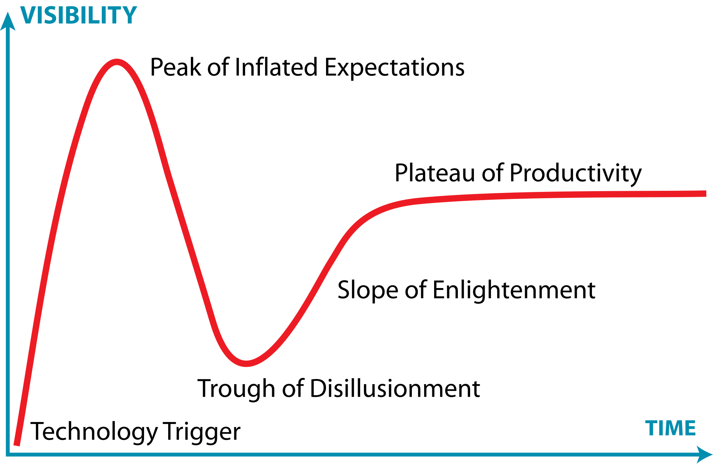

Aula 09 – Introdução aos Microsserviços
Na aula anterior, concluímos nossa primeira jornada pela construção de APIs REST, culminando na implementação de segurança com JWT. Ainda há muito a falar para esgotarmos o tema, mas sem dúvidas já sabemos o suficiente para conseguir avançar nossos conhecimento para a próxima etapa: iniciar a exploração do universo da arquitetura de microsserviços. Este estilo arquitetural ganhou imensa popularidade e é fundamental para construir sistemas complexos, escaláveis e flexíveis no cenário tecnológico atual.
Nesta aula, faremos um mergulho profundo nos conceitos base de Microsserviços.
Toda a estrutura dessa aula está baseada no Capítulo 1 do livro "Criando Microsserviços, 2a Edição" de Sam Newman, com algumas contextualizações e exemplificações a mais do que há no livro.
1. Introdução aos Microsserviços?
Microsserviços vem se tornando uma escolha arquitetural cada vez mais popular, ao menos desde a segunda metade da última década. Embora as ideias fundamentais já existissem antes mesmo disso, a corrida para utilizá-los solidificou práticas testadas e introduziu novos conceitos, enquanto algumas abordagens anteriores caíram em desuso. Começaremos examinando as ideias centrais, o que nos trouxe até aqui e por que essas arquiteturas são tão amplamente utilizadas.
1.1 Microsserviços em Resumo
Em sua essência, microsserviços são serviços que podem ser liberados (released) de forma independente e que são modelados em torno de um domínio de negócio. Cada serviço encapsula uma funcionalidade específica e a torna acessível a outros serviços através da rede, permitindo a construção de sistemas complexos a partir desses blocos menores. Por exemplo, em um sistema de e-commerce, um microsserviço poderia cuidar do inventário, outro da gestão de pedidos e um terceiro do envio, mas juntos eles formariam o sistema completo.
Trata-se de uma escolha arquitetural focada em oferecer múltiplas opções para resolver os problemas que você pode enfrentar. Eles são um tipo de arquitetura orientada a serviços (SOA), porém com opiniões bem definidas sobre como os limites dos serviços devem ser desenhados e com a implantação independente como característica chave. Uma grande vantagem é que são agnósticos à tecnologia.
Do ponto de vista externo, um microsserviço é tratado como uma caixa preta. Ele expõe sua funcionalidade de negócio através de um ou mais endpoints de rede (como uma fila de mensagens ou uma API REST, conforme ilustrado na Figura 1-1 do livro). Consumidores, sejam outros microsserviços ou diferentes tipos de programas, acessam essa funcionalidade por meio desses endpoints. Detalhes internos de implementação, como a tecnologia em que o serviço foi escrito ou a forma como os dados são armazenados, são completamente ocultos do mundo exterior. Isso significa que, na maioria das vezes, arquiteturas de microsserviços evitam o uso de bancos de dados compartilhados; em vez disso, cada microsserviço encapsula seu próprio banco de dados quando necessário.
Os microsserviços abraçam o conceito de ocultação de informação (information hiding). Isso significa esconder o máximo de informação possível dentro de um componente e expor o mínimo necessário através de interfaces externas. Essa prática permite uma separação clara entre o que pode mudar facilmente (implementação interna) e o que é mais difícil de mudar (interfaces de rede). Desde que as interfaces de rede não mudem de forma incompatível com versões anteriores, a implementação interna oculta pode ser alterada livremente. Mudanças dentro dos limites de um microsserviço não devem afetar um consumidor, possibilitando a liberação independente de funcionalidades. Isso é essencial para permitir que os microsserviços sejam trabalhados isoladamente e liberados sob demanda.
Ter limites de serviço claros e estáveis, que não mudam com a implementação interna, resulta em sistemas com acoplamento mais fraco e coesão mais forte. Ao falar sobre ocultar detalhes internos, é importante mencionar o padrão de Arquitetura Hexagonal, detalhado por Alistair Cockburn. Este padrão enfatiza a importância de manter a implementação interna separada de suas interfaces externas, com a ideia de que você pode querer interagir com a mesma funcionalidade através de diferentes tipos de interfaces. O autor do livro que estamos usando como base (Criando Microsserviços, 2a ed. de Sam Newman) desenha seus microsserviços como hexágonos em parte como uma homenagem a essa ideia.
1.2. SOA vs. Microsserviços: São a Mesma Coisa?
A evolução das arquiteturas de software reflete uma busca contínua por maior eficiência, modularidade e agilidade, impulsionada pelas crescentes complexidades dos sistemas e pelas dinâmicas de mercado. Essa jornada levou da predominância de aplicações monolíticas ao surgimento da Arquitetura Orientada a Serviços (SOA) e, posteriormente, à arquitetura de Microsserviços.
A SOA emergiu no início dos anos 2000 como uma resposta aos desafios dos sistemas monolíticos e como uma evolução natural das práticas de Integração de Aplicações Corporativas (EAI), que já buscavam conectar sistemas empresariais díspares. A SOA propunha a decomposição de funcionalidades de negócio em serviços reutilizáveis, comunicando-se através de padrões como Web Services (XML, SOAP, WSDL) e, frequentemente, orquestrados por um Barramento de Serviço Corporativo (ESB). O objetivo era promover a reutilização, a interoperabilidade e um melhor alinhamento entre TI e negócios.
Apesar de seus objetivos louváveis, muitas implementações SOA enfrentaram grandes desafios. A complexidade inerente às plataformas, os altos custos, os longos prazos de implementação e a dificuldade em definir a granularidade correta dos serviços foram críticas comuns. A governança, muitas vezes centralizada e pesada, podia minar a agilidade pretendida, e a dependência de ESBs robustos podia criar novos gargalos e pontos de acoplamento.
O Gartner Hype Cycle ilustra bem a trajetória da SOA, que passou por um pico de expectativas inflacionadas seguido por um período de desilusão, à medida que as dificuldades práticas se tornavam evidentes. A imagem abaixo ilustra esse conceito.

Esses desafios pavimentaram o caminho para a busca por abordagens mais ágeis e descentralizadas e, nesse contexto, a arquitetura de microsserviços começou a se consolidar entre 2011 e 2012, não como uma teoria acadêmica, mas a partir de práticas emergentes em empresas que buscavam maior escalabilidade e velocidade de desenvolvimento, como a Netflix. Figuras como James Lewis e Martin Fowler foram chaves na articulação e disseminação do conceito. Os microsserviços propõem uma granularidade ainda mais fina, onde uma aplicação é composta por um conjunto de pequenos serviços autônomos, cada um focado em uma capacidade de negócio específica, executando em seu próprio processo e capaz de ser implantado independentemente. Essa independência é um grande diferencial, permitindo ciclos de desenvolvimento mais rápidos e maior resiliência. Um outro ponto importante a se considerar é que a ascensão dos microsserviços foi fortemente impulsionada por um ecossistema tecnológico favorável, incluindo a computação em nuvem, que oferece infraestrutura elástica e sob demanda; a cultura e as ferramentas DevOps, que promovem automação (CI/CD) e colaboração; e, fundamentalmente, as tecnologias de conteinerização como Docker e orquestradores como Kubernetes. Essas tecnologias simplificaram o empacotamento, a implantação e o gerenciamento de múltiplos serviços pequenos e independentes, tornando a arquitetura de microsserviços mais viável e acessível.
Portanto, embora compartilhem a herança da orientação a serviços, SOA e microsserviços não são a mesma coisa. Por exemplo, nos microsserviços há a filosofia dos "endpoints inteligentes e pipes burros" central, contrastando com a tendência de ESBs inteligentes na SOA, ao advogar por mecanismos de comunicação leves (como APIs RESTful) e pela autonomia da lógica de negócio dentro de cada serviço.
Dessa forma, microsserviços podem ser vistos como uma forma "evoluída" de SOA, uma tentativa de "fazer SOA da maneira correta", evitando as armadilhas comuns das implementações tradicionais. As diferenças são notáveis em diversos aspectos: os microsserviços têm escopo mais restrito e granularidade muito menor; favorecem a comunicação leve e descentralizada em vez de ESBs centralizados; promovem o gerenciamento de dados descentralizado, com cada serviço possuindo seu próprio banco de dados; e adotam uma governança mais distribuída e flexível. Enquanto a SOA frequentemente visava a reutilização de serviços em nível corporativo, os microsserviços priorizam a independência e a velocidade de entrega de cada serviço.
Podemos concluir, assim, que a transição de SOA para microsserviços representa uma adaptação às novas realidades tecnológicas e de negócios. A SOA introduziu conceitos fundamentais de modularidade e serviços, mas suas implementações muitas vezes resultaram em complexidade e rigidez. Os microsserviços refinaram esses conceitos, enfatizando a autonomia, a implantação independente e a descentralização, tendo sido alavancados por tecnologias como nuvem e contêineres.
2. Conceitos Essenciais dos Microsserviços
Ok! Agora que falamos sobre a diferença entre SOA e Microsserviços, fizemos uma apresentação inicial das ideias e conceitos. Contudo, vamos aprofundá-las e entendê-las de forma mais coerente e abrangente: existem algumas ideias centrais que precisam ser compreendidas ao explorar microsserviços! E dado que alguns aspectos são frequentemente negligenciados, vamos explorá-los para garantir que vocês entendam o que realmente faz os microsserviços funcionarem.
2.1. Implantação Independente: A Pedra Angular
A implantação independente é a ideia de que podemos fazer uma alteração em um microsserviço, implantá-lo e liberar essa alteração para nossos usuários, sem ter que implantar nenhum outro microsserviço. Mais importante, não é apenas o fato de podermos fazer isso, mas que essa é a forma como você gerencia as implantações no seu sistema; é uma disciplina que você adota como sua abordagem de liberação padrão. Essa é uma ideia simples, mas complexa na execução.
Nesse âmbito, Sam Newman chega a apontar que "se você tirar uma coisa do livro e do conceito de microsserviços em geral", que seja esta: certifique-se de abraçar o conceito de implantação independente dos seus microsserviços. Crie o hábito de implantar e liberar alterações em um único microsserviço em produção sem precisar implantar mais nada. A partir disso, muitas coisas boas surgirão.
Para garantir a implantação independente, precisamos garantir que os microsserviços sejam fracamente acoplados: devemos ser capazes de mudar um serviço sem ter que mudar mais nada. Isso significa que precisamos de contratos explícitos, bem definidos e estáveis entre os serviços. Algumas escolhas de implementação dificultam isso: compartilhamento de bancos de dados, por exemplo, é especialmente problemático.
2.2. Modelados em Torno de um Domínio de Negócio Domain-Driven Design (DDD)
Técnicas como o Domain-Driven Design (DDD) podem permitir que você estruture seu código para representar melhor o domínio do mundo real em que o software opera. Com arquiteturas de microsserviços, usamos essa mesma ideia para definir nossos limites de serviço. Ao modelar serviços em torno de domínios de negócio — os chamados bounded contexts — podemos facilitar o lançamento de novas funcionalidades e recombinar microsserviços de maneiras diferentes para entregar valor ao usuário.
Na próxima aula faremos uma abordagem aprofundada dos conceitos de DDD e como eles se relacionam com a arquitetura de microsserviços, mas de forma geral, a ideia é que implementar uma feature que exige alterações em mais de um microsserviço costuma ser caro: é necessário coordenar times, sincronizar versões e garantir ordem correta nos deploys. Por isso, buscamos formas de organizar nossos serviços para minimizar mudanças que cruzem fronteiras de contexto.
Em arquiteturas tradicionais em camadas, como o clássico modelo MVC (apresentação, lógica de negócios e dados), cada camada representa uma separação técnica. Isso facilita alterações locais — por exemplo, só na camada de apresentação —, mas dificulta mudanças que envolvem regras de negócio, já que elas frequentemente atravessam múltiplas camadas. Com DDD aplicado a microsserviços, a proposta é organizar os serviços como “fatias verticais”, cada uma encapsulando toda a funcionalidade relacionada a um domínio específico. Assim, priorizamos a coesão da lógica de negócio dentro de cada serviço, mesmo que isso implique alguma duplicação técnica entre eles.
Assim, ao usar DDD e tornar nossos serviços fatias de ponta a ponta da funcionalidade de negócio, garantimos que nossa arquitetura esteja organizada para tornar as alterações na funcionalidade de negócio o mais eficientes possível. Assim, argumenta-se que, com microsserviços, tomamos a decisão de priorizar a alta coesão da funcionalidade de negócio em detrimento da mais alta coesão da funcionalidade técnica.
2.3. Donos de Seu Próprio Estado
Uma das ideias que mais geram dúvidas ao trabalhar com microsserviços é a regra de que cada microsserviço deve ter seu próprio banco de dados. Isso significa que não devemos permitir que vários serviços acessem diretamente o mesmo banco de dados. Em vez disso, se um serviço A precisar de uma informação que pertence ao serviço B, ele deve fazer uma requisição diretamente ao serviço B (por exemplo, via API REST), e não acessar o banco de dados de B.
Vamos pensar em um exemplo: imagine um sistema de pedidos com dois microsserviços —
Serviço de Pedidos e Serviço de Clientes. Se o Serviço de Pedidos
quiser saber o nome de um cliente, ele deve consultar o
Serviço de Clientes, e não tentar acessar diretamente a tabela de clientes no
banco de dados de outro serviço. Dessa forma, o Serviço de Clientes controla o que está
sendo exposto e mantém a liberdade de modificar sua estrutura interna (por exemplo, alterar colunas ou
regras de negócio) sem impactar diretamente outros serviços, desde que mantenha o
contrato externo (a API) estável.
Esse isolamento é importante para que os microsserviços sejam implantados de forma independente. Se um serviço compartilha diretamente seus dados com outros, qualquer pequena mudança pode quebrar funcionalidades que dependem dele, forçando atualizações em cadeia. Por isso, devemos separar o que é implementação interna (que pode mudar à vontade) do que é contrato público (que deve mudar com cuidado e previsibilidade).
Esse princípio é muito parecido com o encapsulamento na programação orientada a objetos (OOP). Assim como não deixamos outros objetos acessarem diretamente os atributos internos de uma classe — preferindo métodos públicos controlados —, também não devemos deixar outros serviços acessarem nosso banco de dados diretamente. Expor dados internos é como deixar que outras partes do sistema mexam por dentro da sua classe: o risco de quebrar tudo é grande!
Por isso, a recomendação é clara: não compartilhe bancos de dados entre microsserviços, exceto em situações extremamente justificadas — e mesmo assim, com muito cuidado. Cada serviço deve ser uma fatia completa da funcionalidade de negócio, contendo a interface com o usuário (se necessário), a lógica de negócio e os dados. Isso nos dá alta coesão dentro de cada serviço e baixo acoplamento entre eles, facilitando tanto a manutenção quanto a evolução do sistema como um todo.
2.4. Qual o Tamanho Ideal para um microsserviço?
"Quão grande deve ser um microsserviço?" é uma das perguntas mais comuns. Considerando que a palavra "micro" está ali no nome, isso não surpreende. No entanto, quando se trata do que faz os microsserviços funcionarem como um tipo de arquitetura, o conceito de tamanho é, na verdade, um dos aspectos menos interessantes.
Como medir o tamanho? Contando linhas de código? Isso não faz muito sentido. Algo que pode exigir 25 linhas de código em Java pode ser escrito em 10 linhas em Clojure; algumas linguagens são simplesmente mais expressivas que outras. Precisamos, portanto, de outra abordagem.
James Lewis, diretor técnico da Thoughtworks, costuma dizer que "um microsserviço deve ser tão grande quanto a minha cabeça". À primeira vista, isso não parece muito útil. A lógica por trás dessa afirmação é que um microsserviço deve ser mantido em um tamanho que possa ser facilmente compreendido. O desafio, claro, é que a capacidade de diferentes pessoas entenderem algo não é sempre a mesma, e você precisará fazer seu próprio julgamento sobre qual tamanho funciona para você. Uma equipe experiente pode gerenciar melhor uma base de código maior do que outra equipe. Talvez seja melhor ler a citação de James como "um microsserviço deve ser tão grande quanto sua cabeça".
- Comentário do professor: talvez seja ainda melhor ler como "um microsserviço deve ser tão grande quanto a capacidade coletiva da equipe que o mantém". Se um microsserviço começa a se tornar um "nanosserviço", a fragmentação e dispersão de conhecimento é evidente. Se ele é grande suficiente para precisar de manutenção quando features descorrelacionadas mudam, seu contexto foi mal delimitado e ele é grande demais. 🧑💻
Nesse sentido, Sam Newman apontar que o mais próximo que chegamos de "tamanho" ter algum significado em termos de microsserviços é algo que Chris Richardson, autor de Microservice Patterns, disse uma vez: o objetivo dos microsserviços é ter "uma interface tão pequena quanto possível". Isso se alinha novamente com o conceito de ocultação de informações. Ou seja, em última análise, o conceito de tamanho é altamente contextual. Para quem está começando, é muito mais importante focar em duas coisas principais: primeiro, quantos microsserviços você consegue lidar? À medida que você tem mais serviços, a complexidade do seu sistema aumentará. Segundo, como definir os limites dos microsserviços para obter o máximo deles, sem que tudo se torne uma bagunça horrivelmente acoplada? É aí que está a resposta.
2.5. Flexibilidade: Comprando Opções
James Lewis costuma dizer que “microsserviços compram opções”. A escolha do verbo comprar não é por acaso: ela nos lembra que essa flexibilidade tem um custo. Ao adotar uma arquitetura de microsserviços, você passa a ter mais liberdade para lidar com mudanças futuras – como trocar uma tecnologia por outra, escalar partes específicas do sistema, distribuir responsabilidades entre times menores ou aumentar a resiliência de um serviço sem afetar os demais. Mas tudo isso vem acompanhado de mais complexidade, necessidade de monitoramento, orquestração e infraestrutura.
Pense nos microsserviços como uma forma de adquirir opções futuras. Por exemplo, imagine que seu sistema de e-commerce cresceu bastante. Se ele for monolítico, escalar apenas o módulo de pagamentos pode ser difícil. Mas, com microsserviços, você poderia rodar múltiplas instâncias só do serviço de pagamentos, reduzindo gargalos. A questão é: você precisa disso agora? Vale a pena pagar esse custo agora ou seria melhor esperar?
É por isso que Lewis propõe que a adoção de microsserviços não seja vista como um interruptor que você liga de uma vez, mas como um botão de volume que você gira aos poucos. Você começa com poucos microsserviços, talvez separando apenas os módulos que mais mudam ou que mais precisam escalar. À medida que ganha experiência e percebe benefícios reais, pode ir “aumentando o volume”, isto é, modularizando mais partes do sistema. E se perceber que os custos superam os ganhos, pode parar por ali.
Essa abordagem incremental ajuda a evitar surpresas. Se você for direto para uma arquitetura com dezenas de microsserviços, pode acabar enfrentando problemas de comunicação entre serviços, falhas em cascata, dificuldades de testes e deploys mais complexos – tudo isso sem ter estrutura ou equipe preparadas para lidar com essa nova realidade.
2.6. Alinhamento entre Arquitetura e Organização (Lei de Conway)
Vamos imaginar a MusicCorp, uma loja virtual que vende CDs e que serviu de exemplo no livro que estamos nos baseando (Criando Microsserviços, segunda edição).
O sistema da MusicCorp é construído em uma arquitetura bem tradicional: três camadas — uma interface web para os usuários (UI), um backend com toda a lógica do sistema (monolítico) e um banco de dados relacional para guardar as informações. Até aí, nada muito diferente do que vemos em muitas empresas. O detalhe importante é que cada uma dessas camadas é gerenciada por uma equipe diferente: os designers e desenvolvedores de frontend cuidam da UI, os programadores do backend cuidam da lógica de negócio, e os DBAs administram o banco de dados.
Agora pense que a empresa quer adicionar um campo no cadastro para que o cliente possa escolher seu gênero musical favorito. Parece uma mudança simples, certo? Mas, nesse modelo, essa alteração vai exigir trabalho das três equipes: a equipe de UI precisa criar o novo campo visual, a equipe do backend tem que tratar o dado e enviá-lo ao banco, e a equipe de banco de dados precisa ajustar a estrutura para armazenar a nova informação. Além disso, tudo isso precisa ser coordenado na ordem certa e implantado junto, senão o sistema quebra. O que era uma pequena melhoria se transforma em uma operação complexa.
Essa forma de organizar os sistemas reflete algo mais profundo: como organizamos as nossas equipes. Isso é o que a famosa Lei de Conway nos ensina: “as organizações tendem a criar sistemas que são cópias das suas próprias estruturas de comunicação”. Ou seja, se temos uma equipe para cada camada (UI, backend, banco), nosso sistema também tende a ser dividido assim.
No passado, esse modelo fazia sentido. As empresas de TI agrupavam pessoas por especialidade: todos os DBAs juntos, todos os devs Java juntos, e assim por diante. Era natural que os sistemas também fossem construídos por camadas, refletindo essa divisão. É por isso que a arquitetura em três camadas se tornou tão comum.
Mas os tempos mudaram. Hoje queremos entregar software mais rápido, com menos dependência entre equipes. Começamos a formar equipes polivalentes, compostas por pessoas de diferentes áreas que conseguem, juntas, cuidar de uma funcionalidade do começo ao fim — do banco à interface. O objetivo é reduzir a quantidade de passagens de tarefa entre times e agilizar o desenvolvimento.
A maioria das mudanças que fazemos em um sistema tem a ver com funcionalidade de negócio. Só que, na arquitetura em camadas, essa funcionalidade está espalhada por todo o sistema: uma parte na UI, outra no backend, outra no banco. Isso aumenta as chances de qualquer mudança pequena gerar impacto em várias partes, exigindo coordenação entre vários times.
Para resolver isso, é melhor organizarmos nosso código (e nossas equipes) em torno de funcionalidades de negócio e não de tecnologias. Isso significa que cada equipe cuida de uma parte específica do domínio da empresa — por exemplo, uma equipe só para o perfil do cliente. Essa equipe teria total autonomia para mudar o que for necessário no cadastro de clientes, incluindo, por exemplo, adicionar o campo de gênero musical favorito.
Essa forma de organização é chamada de arquitetura vertical por domínio de negócio. Em vez de separarmos o sistema em camadas horizontais (UI, backend, banco), nós o dividimos em linhas de negócio verticais, onde cada time cuida de tudo relacionado a uma parte do sistema. Nesse exemplo, a equipe de perfil do cliente poderia até manter um microsserviço próprio, com a lógica, a UI e o banco de dados necessários apenas para aquilo.
Esse modelo traz mais agilidade e reduz o atrito entre times. O livro Team Topologies chama isso de equipe alinhada ao fluxo (stream-aligned team): times focados em um fluxo de trabalho específico, com autonomia para entregar valor ao usuário de ponta a ponta, sem precisar ficar dependendo de outros grupos para cada mudança.
3. E o Monólito?
Microsserviços são frequentemente discutidos como uma alternativa à arquitetura monolítica. Para distinguir mais claramente a arquitetura de microsserviços, é importante discutir o que se entende por monólitos. Um monólito é primariamente definido como uma unidade de implantação: quando toda a funcionalidade de um sistema deve ser implantada em conjunto, é considerado um monólito.
3.1. O Monólito de Processo Único
O exemplo mais comum de monólito é um sistema onde todo o código é implantado como um único processo. Você pode ter múltiplas instâncias desse processo por razões de robustez ou escalabilidade, mas fundamentalmente todo o código está empacotado em um único processo. Na realidade, esses sistemas de processo único quase sempre acabam lendo ou armazenando dados em um banco de dados, ou apresentando informações para aplicações web ou móveis, tornando-os sistemas distribuídos simples por si sós. Um monólito clássico de processo único pode fazer sentido para muitas organizações, especialmente as menores.
3.2. O Monólito Modular
Dentro do universo das arquiteturas monolíticas, existe uma variação chamada monólito modular. O monólito modular é uma variação da arquitetura monolítica tradicional que aplica, de forma deliberada, os princípios de modularidade propostos por David Parnas no artigo clássico "On the Criteria To Be Used in Decomposing Systems into Modules". Em vez de dividir o sistema com base nas etapas de execução (como “entrada, processamento, saída”), Parnas defendeu que deveríamos organizar os módulos com base em decisões que podem mudar no futuro, ocultando essas decisões dentro dos próprios módulos. Esse princípio ficou conhecido como ocultamento da informação (information hiding).
Dessa forma, ao invés de termos um único bloco de código todo misturado, a aplicação é dividida em módulos separados — como se fosse um prédio com vários apartamentos independentes, mas todos ainda fazendo parte do mesmo edifício. Na prática, isso significa que diferentes partes do sistema (por exemplo, módulo de pagamentos, módulo de usuários, módulo de catálogo) são desenvolvidas separadamente, com regras e responsabilidades bem definidas, mas ainda são empacotadas e implantadas juntas como um único sistema.
Essa abordagem pode funcionar muito bem para muitas empresas, especialmente as que ainda não têm maturidade ou necessidade de investir na complexidade dos microsserviços. Se os limites entre os módulos forem bem definidos e respeitados, é possível que várias equipes trabalhem em paralelo em partes diferentes do sistema, sem se atrapalhar, o que traz muitos dos benefícios da modularidade sem os custos operacionais da arquitetura distribuída.
Um bom exemplo é o Shopify, que por muito tempo escolheu não adotar microsserviços em larga escala. Em vez disso, estruturou seu sistema como um grande monólito com módulos bem organizados, mantendo a simplicidade na hora de fazer deploys e testes — tudo rodando num único processo, mas com divisão interna clara.
Porém, essa abordagem também tem seus desafios. Um dos principais é que, embora o código esteja modularizado, o banco de dados costuma continuar como uma estrutura única e compartilhada. Ou seja, mesmo que você tenha um módulo só de pedidos, ele ainda acessa tabelas que também são usadas por outros módulos. Isso cria um forte acoplamento entre as partes, dificultando futuras tentativas de extrair os módulos para transformá-los em microsserviços independentes. Algumas equipes tentam resolver esse problema modularizando também o banco de dados, ou seja, criando conjuntos de tabelas separados por módulo, cada um com sua própria lógica de negócio. Isso ajuda a reduzir o acoplamento e deixa o caminho mais aberto para, no futuro, migrar cada módulo para um microsserviço de forma mais tranquila. Mas vale lembrar que essa abordagem exige muito mais disciplina técnica e governança de dados.
O monólito modular, portanto, é como um “meio-termo” entre o monolito tradicional e os microsserviços. Ele pode ser uma escolha estratégica muito boa, especialmente para organizações que querem escalar o desenvolvimento sem lidar desde já com toda a complexidade da arquitetura distribuída.
3.3. O Monólito Distribuído
O que chamamos de monólito distribuído é um sistema que, à primeira vista, parece moderno por ser composto por vários serviços independentes. No entanto, na prática, todos esses serviços precisam ser implantados juntos, como se fossem partes inseparáveis de um único sistema. Ou seja, mesmo que você tenha dividido seu código em vários projetos ou repositórios, ainda precisa subir tudo de uma vez — o que elimina boa parte das vantagens da arquitetura distribuída.
Esse tipo de sistema costuma surgir quando as equipes tentam migrar de um monólito tradicional para
microsserviços, mas não mudam de fato a forma como os serviços se relacionam. Por
exemplo: imagine um sistema com serviços como PedidoService, EstoqueService e
PagamentoService. Em vez de funcionarem de forma independente, eles estão tão interligados
que uma pequena alteração no serviço de estoque obriga a reimplantação dos outros dois, porque tudo está
sincronizado de forma rígida — talvez com chamadas diretas, bancos de dados compartilhados ou
dependências circulares.
O resultado é um sistema com todas as dificuldades de uma arquitetura distribuída (como complexidade de comunicação, monitoramento, tolerância a falhas) sem colher os benefícios (como deploys isolados, escalabilidade independente ou autonomia entre times).
Além disso, as dependências entre os serviços são tão fortes que qualquer mudança em um pedaço do sistema acaba afetando outros módulos inesperadamente. Um ajuste simples — como mudar o cálculo do frete — pode quebrar a lógica de emissão de nota fiscal, porque os dois serviços compartilham regras, dados ou chamadas internas de forma pouco controlada.
Esse acoplamento excessivo impede que as equipes trabalhem de forma independente e aumenta o risco de erro. Em vez de facilitar a evolução do sistema, a arquitetura distribuída passa a gerar medo de mudanças, tornando o sistema mais lento e difícil de manter.
Para evitar cair nesse cenário, é importante não apenas dividir o sistema em serviços, mas garantir que cada serviço seja realmente autônomo. Isso inclui:
- Definir claramente o que cada serviço faz.
- Evitar que serviços compartilhem banco de dados diretamente.
- Criar APIs bem definidas para comunicação entre serviços.
- Minimizar as dependências ocultas (como regras de negócio duplicadas ou implícitas).
Em resumo, o monólito distribuído parece moderno, mas funciona como um monólito disfarçado. Ele traz o custo da complexidade sem entregar os benefícios da separação. Por isso, ao adotar uma arquitetura distribuída, é essencial garantir que os serviços sejam verdadeiramente independentes — tanto na lógica quanto na operação.
Em resumo...
Podemos sintetizar os diferentes tipos de monólitos da seguinte forma:
| Característica | Monólito Tradicional | Monólito Modular | Monólito Distribuído |
|---|---|---|---|
| Organização do código | Mistura de responsabilidades, sem separação clara entre módulos | Dividido em módulos coesos com limites definidos | Dividido em serviços aparentes, mas com forte acoplamento entre eles |
| Implantação | Um único artefato implantado junto | Um único artefato implantado junto (apesar da separação interna) | Vários serviços, mas que precisam ser implantados juntos |
| Autonomia entre partes do sistema | Baixa | Moderada – os módulos têm autonomia lógica, mas não de runtime | Baixa – os serviços dependem uns dos outros para funcionar e evoluir |
| Facilidade de manutenção | Baixa – mudanças em uma parte podem afetar todo o sistema | Boa – se os módulos forem bem desenhados, mudanças locais têm impacto mais controlado | Ruim – mudanças locais podem ter impacto inesperado em outros serviços |
| Escalabilidade | Escala como um todo (não é possível escalar partes isoladas) | Escala como um todo, mas é possível otimizar desempenho internamente por módulo | Em teoria escalável por serviço, mas na prática limitado pelo acoplamento |
| Complexidade de desenvolvimento | Baixa – fácil de começar | Moderada – exige organização e disciplina modular | Alta – complexidade de sistemas distribuídos, mas sem os benefícios reais |
| Complexidade operacional | Baixa – simples de testar, implantar e monitorar | Baixa a moderada – depende da modularidade interna | Alta – exige monitoramento, coordenação de versões e tolerância a falhas entre serviços |
| Coesão funcional | Baixa – responsabilidades frequentemente espalhadas entre camadas | Alta – cada módulo tende a se concentrar em uma única responsabilidade | Baixa – serviços podem se cruzar em funcionalidades, criando dependências implícitas |
| Acoplamento entre partes | Alto | Baixo a moderado, se bem projetado | Alto – dependência forte entre serviços, com comunicação acoplada e compartilhamento de estado |
| Exemplo típico | Aplicações legadas com separação por camadas (UI, lógica, banco) | Shopify, projetos modernos que optam por monólito bem estruturado | Tentativas falhas de adotar microsserviços sem autonomia real de serviços |
3.4. Monólitos e a Contenção na Entrega
Quando muitas pessoas trabalham no mesmo sistema, é comum que comecem a atrapalhar o trabalho umas das outras. Por exemplo: dois desenvolvedores podem querer alterar o mesmo trecho de código ao mesmo tempo, ou equipes diferentes podem precisar fazer deploys em momentos distintos — uma pronta para liberar uma nova funcionalidade, outra querendo adiar uma entrega por ainda estar testando algo. Além disso, pode surgir confusão sobre quem é responsável por cada parte do sistema, dificultando a tomada de decisões e a coordenação do trabalho.
Esse tipo de situação é conhecido como contenção na entrega (delivery contention) — quando múltiplas equipes ou pessoas competem por modificar, testar ou implantar partes do mesmo sistema ao mesmo tempo. Isso gera atrasos, conflitos e, muitas vezes, retrabalho.
É importante destacar que esse problema pode acontecer em qualquer tipo de arquitetura. Ter um monólito não significa automaticamente que você terá esse problema, assim como usar microsserviços não garante que ele desaparecerá. No entanto, os microsserviços oferecem uma estrutura mais clara de separação entre as partes do sistema, com limites técnicos e organizacionais bem definidos. Cada equipe pode ser dona de um serviço específico, com mais autonomia para decidir quando e como fazer alterações ou implantar novas versões, sem depender tanto dos outros times.
Essa separação ajuda a reduzir a contenção na entrega, pois limita o número de pessoas que atuam diretamente no mesmo código e permite que as equipes operem de forma mais independente. Em resumo, os microsserviços não eliminam o problema, mas criam condições melhores para lidar com ele à medida que o sistema e as equipes crescem.
3.5. Vantagens dos Monólitos
Embora os microsserviços estejam em alta, monólitos bem estruturados — como os de processo único ou os chamados monólitos modulares — ainda têm muitas vantagens relevantes, especialmente para equipes menores ou projetos em estágio inicial. Uma das maiores vantagens é a simplicidade na implantação: todo o sistema é empacotado e executado como uma única aplicação. Isso evita vários problemas típicos de sistemas distribuídos, como falhas na comunicação entre serviços, necessidade de orquestração ou complexidades no versionamento de APIs internas.
Na prática, isso significa que o fluxo de trabalho do desenvolvedor pode ser muito mais simples. Por exemplo, para testar uma nova funcionalidade, o desenvolvedor só precisa rodar um único serviço localmente. Já em uma arquitetura distribuída, ele possivelmente teria que subir múltiplos serviços, configurar dependências e simular integrações. Além disso, atividades como monitoramento, depuração (debug) e testes de ponta a ponta tendem a ser mais diretas e fáceis em um monólito, porque tudo está no mesmo lugar — inclusive os logs, os dados e o contexto da execução.
Outra vantagem importante é a facilidade na reutilização de código. Dentro de um monólito, é comum que múltiplos módulos compartilhem funções, classes ou bibliotecas sem precisar publicar pacotes separados, criar contratos entre serviços ou lidar com compatibilidade de versões.
Apesar disso, muita gente passou a enxergar o monólito como algo ultrapassado, como se fosse sinônimo de "código legado" ou “erro de projeto”. Esse preconceito pode levar equipes a adotar microsserviços antes da hora, enfrentando toda a complexidade de sistemas distribuídos sem necessidade.
Mas, na verdade, usar um monólito é uma escolha técnica válida e, em muitos casos, a melhor escolha. O autor inclusive afirma que, em sua opinião, a arquitetura monolítica deveria ser o ponto de partida padrão para a maioria dos projetos. Ou seja, ele parte do princípio de que o monólito é o caminho mais sensato, e só consideraria microsserviços se houver motivos concretos para isso — como escala organizacional, autonomia de equipes ou demandas técnicas específicas.
Essa visão ajuda a evitar o erro comum de “usar microsserviços por moda” e reforça a ideia de que a arquitetura deve servir às necessidades do sistema e da equipe — e não o contrário.
4. Tecnologias Facilitadoras
Ao iniciar com microsserviços, não é necessário adotar um conjunto enorme de tecnologias novas logo de início. Na verdade, fazer isso pode atrapalhar mais do que ajudar. O ideal é começar com uma base simples e, conforme os desafios forem surgindo, adotar tecnologias que resolvam problemas reais da sua arquitetura cada vez mais distribuída.
Por outro lado, conhecer as ferramentas certas é fundamental para tirar o máximo proveito dessa abordagem. Se você está ajudando a desenhar ou evoluir uma arquitetura de microsserviços, será essencial entender tanto a arquitetura lógica (como os serviços se relacionam e se dividem funcionalmente) quanto a arquitetura física (como tudo roda, se comunica e é operado no ambiente real).
4.1. Agregação de Logs e Rastreamento Distribuído
Conforme você começa a lidar com diversos microsserviços rodando ao mesmo tempo, entender o que está acontecendo no sistema fica mais difícil. Erros podem surgir em um serviço e se propagar para outro, e sem visibilidade centralizada, descobrir onde começou o problema vira um desafio.
Por isso, um dos primeiros passos recomendados é implementar uma ferramenta de agregação de logs. Ela coleta os logs de todos os serviços e os centraliza em um único painel para consulta e análise. Ferramentas como Humio, ou os serviços de logging da AWS, Azure e GCP, são boas opções para começar. Além disso, o uso de IDs de correlação (um identificador único que acompanha todo o ciclo de uma requisição entre serviços) facilita muito o rastreamento de uma chamada do início ao fim.
À medida que a arquitetura cresce, também se torna importante usar ferramentas de rastreamento distribuído — que vão além dos logs e mostram como as requisições fluem entre os serviços. Soluções como Jaeger (open source), Lightstep e Honeycomb oferecem visibilidade detalhada dos tempos de resposta, gargalos e falhas, ajudando você a diagnosticar problemas em tempo real.
4.2. Contêineres e Kubernetes
Idealmente, cada microsserviço deve rodar de forma isolada, para que uma falha em um deles (como alto consumo de CPU ou memória) não comprometa os demais. Contêineres são uma maneira leve e eficiente de conseguir isso — diferentemente das máquinas virtuais, eles têm tempo de inicialização rápido e consomem menos recursos, o que é perfeito para arquiteturas compostas por muitos serviços pequenos.
Depois de começar a usar contêineres, você provavelmente vai precisar orquestrá-los em diferentes servidores, lidar com escalabilidade, reinicialização automática e balanceamento de carga. É aí que entra o Kubernetes, uma plataforma de orquestração de contêineres que faz tudo isso por você.
No entanto, não é necessário começar com Kubernetes. Se você tem apenas alguns microsserviços, soluções mais simples ou até mesmo scripts de deploy manuais podem bastar. Só pense em Kubernetes quando o gerenciamento da infraestrutura começar a virar um gargalo. E, se possível, use serviços gerenciados de Kubernetes, como o GKE (Google), EKS (AWS) ou AKS (Azure), para evitar o custo de operar seu próprio cluster.
4.3. Streaming de Dados
Mesmo em uma arquitetura distribuída, os microsserviços precisam trocar informações — e, muitas vezes, isso precisa acontecer em tempo real. Além disso, há uma tendência nas empresas de sair do processamento em lote (batch) e adotar um modelo de feedback contínuo.
Ferramentas de streaming de dados, como o Apache Kafka, se tornaram populares justamente por permitir esse tipo de comunicação assíncrona, escalável e resiliente. Com o Kafka, você pode publicar e consumir mensagens entre serviços de forma desacoplada, garantindo que os dados fluam mesmo que um dos serviços esteja temporariamente indisponível.
Além disso, o Kafka vem evoluindo e agora oferece recursos de processamento de streams, como o ksqlDB, e pode ser integrado com ferramentas como o Apache Flink para análises em tempo real. Se você quer começar transmitindo dados diretamente de bancos relacionais, o Debezium é uma opção excelente — ele capta mudanças nos dados e envia como eventos Kafka, sem precisar reescrever todo o seu sistema.
4.4. Nuvem Pública e Serverless
À medida que sua arquitetura de microsserviços cresce, a complexidade da infraestrutura também aumenta. É nesse ponto que os serviços gerenciados da nuvem pública se tornam aliados poderosos. Plataformas como AWS, Azure e Google Cloud oferecem bancos de dados, filas, clusters Kubernetes e ferramentas de monitoramento já prontas para uso, poupando sua equipe de montar e manter tudo do zero.
Além disso, o modelo serverless permite subir funções, APIs ou componentes sem precisar se preocupar com servidores, escalabilidade ou alocação de recursos. Com Function as a Service (FaaS), como o AWS Lambda ou Google Cloud Functions, você apenas escreve o código e a plataforma cuida do resto — subindo e escalando automaticamente conforme a demanda.
Esse modelo é especialmente útil para tarefas event-driven, como processar uploads, responder a chamadas HTTP ou lidar com eventos de uma fila. Ele reduz custos operacionais e acelera o desenvolvimento, sendo uma excelente opção para partes específicas da arquitetura que se beneficiam dessa abordagem.
5. Vantagens dos Microsserviços
Os microsserviços oferecem uma série de vantagens, especialmente quando bem projetados e alinhados com os objetivos do negócio. Muitos desses benefícios são compartilhados com outras arquiteturas distribuídas, mas os microsserviços se destacam por delimitar com mais precisão os limites entre os serviços, combinando boas práticas como ocultamento de informações e princípios do Domain-Driven Design (DDD). Isso permite que suas vantagens sejam exploradas de forma mais intensa e estruturada.
5.1. Heterogeneidade Tecnológica
Em um sistema monolítico, todos os desenvolvedores geralmente precisam seguir a mesma linguagem de programação, o mesmo framework e o mesmo banco de dados — o que pode ser limitador. Já em uma arquitetura de microsserviços, cada serviço pode ser construído com a tecnologia mais adequada à sua função.
Por exemplo, um serviço de recomendação pode ser feito em Python usando bibliotecas de machine learning, enquanto outro serviço, de autenticação, pode usar Java pela maturidade da plataforma. Além disso, cada serviço pode escolher seu próprio banco de dados: um banco orientado a grafos para redes sociais, um banco relacional para faturamento e um banco de documentos para postagens de usuários.
Outra grande vantagem é a capacidade de experimentar novas tecnologias com menos risco. Como os serviços são independentes, você pode testar uma nova linguagem ou banco de dados em apenas um serviço, sem comprometer todo o sistema. Isso facilita a inovação controlada. Claro, adotar muitas tecnologias diferentes também traz custos — por isso, algumas empresas (como Netflix e Twitter) preferem limitar o ecossistema tecnológico para manter a consistência.
5.2. Robustez
Um dos conceitos centrais em sistemas resilientes é o de compartimentos estanques (ou bulkheads), inspirado no design de navios: se um compartimento se rompe, o vazamento não afeta o navio todo. Nos microsserviços, os próprios serviços funcionam como esses compartimentos.
Se um serviço falhar, o restante do sistema pode continuar operando com funcionalidade reduzida. Por exemplo, se o serviço de avaliações de produtos cair, o usuário ainda pode navegar pelo catálogo e concluir compras. Em um monólito, uma falha local muitas vezes derruba o sistema inteiro.
Mas atenção: os microsserviços também introduzem novos riscos, como falhas de rede, dependência de chamadas externas e maior latência. Por isso, é fundamental projetar esses serviços com resiliência em mente — usando timeouts, retries, circuit breakers e fallback strategies.
5.3. Escalabilidade
No modelo monolítico, quando uma parte do sistema precisa de mais desempenho, o sistema inteiro precisa ser escalado, mesmo que o problema esteja em apenas um módulo. Isso é ineficiente e custoso.
Com microsserviços, podemos escalar apenas os serviços que realmente precisam de mais recursos. Se o serviço de carrinho de compras sofre picos durante promoções, podemos subir várias instâncias só desse serviço, enquanto outros continuam rodando normalmente em menos recursos. A empresa Gilt, do setor de moda, adotou microsserviços justamente para lidar com picos de tráfego de forma mais eficiente e econômica.
Essa escalabilidade seletiva é ainda mais poderosa quando combinada com ambientes de nuvem e provisionamento sob demanda, como os da AWS ou GCP, que permitem ajustar o uso de recursos automaticamente conforme a necessidade.
5.4. Facilidade de Implantação
Em um monólito, mesmo uma mudança pequena exige que a aplicação inteira seja empacotada e implantada novamente. Isso torna o processo mais arriscado e demorado, o que leva muitas empresas a acumular mudanças antes de liberar — aumentando ainda mais o risco.
Já nos microsserviços, cada serviço pode ser implantado de forma independente. Se fizermos uma pequena correção no serviço de notificações, por exemplo, só ele precisa ser atualizado, sem afetar o resto do sistema. Isso permite entregas mais rápidas, seguras e frequentes, além de facilitar o rollback em caso de falha.
É por isso que empresas como Amazon e Netflix conseguem fazer centenas ou até milhares de deploys por dia.
5.5. Alinhamento Organizacional
Times grandes trabalhando sobre o mesmo código costumam gerar conflitos, lentidão e dependências. Com microsserviços, podemos organizar os times para que cada um seja responsável por um serviço ou um conjunto de funcionalidades. Isso reduz a quantidade de pessoas envolvidas em cada base de código e melhora a produtividade.
Esse modelo permite formar equipes pequenas, autônomas e alinhadas com fluxos de negócio específicos (como pagamentos, estoque ou recomendação), promovendo mais foco, responsabilidade e agilidade. Além disso, é mais fácil adaptar a organização conforme a empresa cresce: você pode mudar a responsabilidade de um serviço de um time para outro sem grandes impactos estruturais.
5.6. Composabilidade
Microsserviços também tornam o sistema mais componível — ou seja, suas funcionalidades podem ser reutilizadas de maneiras diferentes, como blocos de construção.
Por exemplo, o mesmo serviço de recomendação pode ser usado tanto pelo site quanto pelo app mobile ou mesmo por parceiros via API. Essa reutilização em múltiplos canais é muito mais difícil em sistemas monolíticos, que geralmente têm uma interface única e acoplada.
Pense nos microsserviços como partes conectáveis, que permitem criar novas experiências (para desktop, mobile, dispositivos vestíveis) apenas reorganizando as peças existentes, sem precisar reescrever tudo.
6. Os Desafios (Pain Points) dos Microsserviços
Apesar de suas muitas vantagens, a adoção de uma arquitetura de microsserviços traz também uma série de complexidades. Antes de migrar para esse modelo, é importante fazer uma análise equilibrada entre os benefícios e os custos. Muitos dos desafios enfrentados aqui são, na verdade, inerentes a qualquer sistema distribuído — ou seja, também podem surgir em um monólito distribuído mal estruturado.
6.1. Experiência do Desenvolvedor (Developer Experience - DX)
À medida que o número de serviços cresce, a rotina de desenvolvimento se torna mais pesada. Em um monólito, o desenvolvedor pode rodar tudo localmente com um simples comando. Já em microsserviços, é comum precisar subir diversos serviços para testar algo — o que pode consumir muitos recursos da máquina, especialmente se estiver usando runtimes pesados como a JVM.
Rodar 10 ou mais microsserviços localmente pode ser impraticável. Isso leva a discussões como “devo desenvolver diretamente na nuvem?” — o que pode atrasar o ciclo de feedback e dificultar a produtividade. Uma abordagem mais prática é limitar o escopo local de desenvolvimento (ex: rodar apenas os serviços essenciais), embora isso possa gerar conflitos com culturas de "propriedade coletiva" do código.
6.2. Sobrecarga Tecnológica
Microsserviços não exigem, mas permitem o uso de várias tecnologias diferentes — linguagens, bancos de dados, frameworks. Esse poder de escolha pode ser tentador e, em muitos casos, as equipes acabam adotando um “combo” de ferramentas novas ao mesmo tempo, o que gera uma curva de aprendizado e manutenção considerável.
A diversidade tecnológica só vale a pena se for usada com parcimônia e propósito. É comum empresas acharem que, ao adotar microsserviços, também precisam usar Kubernetes, mensageria, múltiplas linguagens, bancos especializados etc. Mas a verdade é que cada nova tecnologia adiciona complexidade, e isso pode atrasar entregas e aumentar o custo de manutenção.
Dica: introduza tecnologias à medida que os problemas surgirem. Não é necessário usar Kafka ou Kubernetes se você tem apenas três serviços e consegue gerenciá-los bem com ferramentas simples.
6.3. Custo
No curto prazo, é muito comum que os custos aumentem com a adoção de microsserviços. São mais processos rodando, mais máquinas ou containers, mais tráfego de rede, mais armazenamento e ferramentas de suporte — sem falar em licenciamento e operações.
Além disso, há o custo de aprendizado e adaptação da equipe. O tempo para entender novas práticas, modelar os serviços corretamente e automatizar o deploy impacta diretamente na entrega de novas funcionalidades.
Se a sua organização tem foco principal em redução de custos, pode ser que os microsserviços tragam mais dor de cabeça do que benefícios. Por outro lado, se o objetivo for acelerar o crescimento, atender mais usuários ou liberar funcionalidades em paralelo, a arquitetura distribuída pode ajudar a gerar mais valor — e, assim, mais receita.
6.4. Relatórios
Em um monólito, os dados geralmente estão centralizados em um único banco. Isso facilita a geração de relatórios: basta consultar diretamente a base (ou uma réplica de leitura) para gerar dashboards, gráficos ou análises.
Nos microsserviços, os dados ficam espalhados por vários bancos isolados, o que torna mais difícil realizar análises globais. Se os dados de vendas estão em um serviço, os de clientes em outro, e os de produtos em um terceiro, é preciso encontrar maneiras de agregá-los.
Soluções incluem o uso de data lakes, pipelines de streaming com Kafka ou o envio regular de dados para um repositório de relatórios unificado. Mas todas essas opções exigem esforço adicional e novas tecnologias.
6.5. Monitoramento e Solução de Problemas
No monólito, monitorar e debugar é relativamente simples: se a aplicação caiu ou está lenta, o impacto é visível. Em microsserviços, o sistema continua funcionando mesmo que partes estejam falhando — o que torna os problemas mais sutis e difíceis de detectar.
Além disso, há muitos serviços, cada um com logs e métricas próprios, e entender o que está acontecendo requer ferramentas adequadas de observabilidade. Um único serviço travado em 100% de CPU pode não parecer crítico, mas pode estar afetando silenciosamente a experiência do usuário.
Ferramentas como Grafana, Prometheus, Jaeger e Loki ajudam muito nesse cenário, mas exigem investimento em cultura e infraestrutura para serem bem aproveitadas.
6.6. Segurança
Em um monólito, a maior parte dos dados trafega dentro do mesmo processo. Já nos microsserviços, os dados circulam entre processos via rede, o que expõe o sistema a novos riscos: interceptação, manipulação de mensagens e acessos indevidos.
É fundamental adotar práticas como:
- Criptografia de dados em trânsito (TLS);
- Autenticação e autorização entre serviços (por exemplo, com tokens JWT);
- Validação de contratos e limites de acesso.
Microsserviços exigem uma abordagem mais cuidadosa de segurança — tanto no nível de rede quanto no de aplicação.
6.7. Testes
Testar microsserviços é mais desafiador. Quanto maior o número de serviços envolvidos, mais difícil é garantir que tudo funcione em conjunto. Testes de ponta a ponta se tornam pesados, lentos e propensos a erros falsos — como falhas causadas por um serviço estar fora do ar, e não por um bug real.
Isso pode levar a retorno decrescente sobre os testes automatizados tradicionais. Em vez disso, é recomendável adotar testes de contrato, testes em produção controlados (como canary releases) e entregas progressivas com controle de impacto.
6.8. Latência
Ao dividir uma lógica que antes rodava localmente em vários serviços separados, as chamadas passam a trafegar pela rede, o que introduz atrasos de comunicação. Cada requisição agora envolve:
- Serializar os dados;
- Enviar pela rede;
- Esperar resposta.
Isso pode aumentar significativamente o tempo de resposta de algumas operações. O impacto varia conforme o volume de chamadas e a arquitetura da rede — e deve ser medido e monitorado com ferramentas de rastreamento, como Jaeger.
Por isso, migrar para microsserviços deve ser um processo incremental, com monitoramento constante da latência de ponta a ponta.
6.9. Consistência de Dados
Em sistemas monolíticos, é comum contar com transações de banco de dados para garantir que múltiplas operações ocorram juntas ou não ocorram — o chamado all-or-nothing. Em microsserviços, como os dados estão espalhados em bancos diferentes, transações distribuídas são raras e arriscadas.
Por isso, é preciso adotar modelos como:
- Sagas, onde uma sequência de etapas é executada em diferentes serviços com compensações em caso de falha;
- Consistência eventual, aceitando que os dados estejam temporariamente fora de sincronia, mas se resolvam ao longo do tempo.
Esses conceitos exigem uma mudança profunda na forma como pensamos e tratamos os dados — o que pode ser difícil para quem está migrando de sistemas legados.
7. Devo Usar Microsserviços?
Embora os microsserviços sejam amplamente discutidos e adotados por muitas empresas, isso não significa que eles devem ser o padrão para todo projeto. Como vimos, essa arquitetura traz benefícios reais — mas também desafios significativos. Antes de optar por microsserviços, é essencial refletir sobre o contexto da sua equipe, do seu produto e da sua infraestrutura.
Microsserviços são uma das possíveis abordagens arquiteturais, não a única. Em muitos casos, um monólito bem estruturado pode atender melhor às suas necessidades — especialmente no início do desenvolvimento.
7.1. Quando Microsserviços Podem Não Ser a Melhor Escolha
🔧 Produtos novos ou startups em estágio inicial No começo de um produto, muita coisa muda rapidamente: requisitos, funcionalidades e até a visão do negócio. Separar o sistema em microsserviços nesse estágio pode criar mais dores do que ganhos, pois os limites entre serviços ainda não estão claros. A cada mudança no modelo de domínio, você terá que ajustar as interfaces entre serviços — algo caro e trabalhoso.
Além disso, pensar "vamos usar microsserviços agora porque no futuro vamos precisar escalar" pode ser uma armadilha. Na prática, você ainda não sabe se o produto será um sucesso, nem como ele vai evoluir. É melhor validar o produto com uma arquitetura simples e refatorar mais tarde, se necessário — como fizeram empresas como Uber e Flickr, que começaram de forma muito diferente do que são hoje.
👩💻 Equipes pequenas Com poucos desenvolvedores, manter microsserviços pode ser um fardo desnecessário. Cada serviço exige deploy, monitoramento, testes, integração e operação. Esse "imposto" só se justifica quando há um time suficientemente grande para se beneficiar da divisão de responsabilidades. Para times pequenos, manter um monólito modular é mais produtivo — e migrar para microsserviços no futuro é sempre uma opção.
📦 Software entregue aos clientes Se você desenvolve softwares que são instalados e gerenciados pelos próprios clientes (como ERPs, CRMs ou sistemas embarcados), os microsserviços podem ser um desafio. Seus clientes talvez estejam acostumados com um instalador simples e local. Pedir que eles configurem Kubernetes ou orquestradores de containers pode gerar resistência, erros e frustração. Microsserviços funcionam melhor quando você tem controle sobre o ambiente de execução.
7.2. Onde Microsserviços Realmente Brilham
👥 Equipes grandes e crescimento organizacional Se sua organização está crescendo e há muitas pessoas trabalhando no mesmo sistema, microsserviços podem ajudar a reduzir conflitos entre equipes. Ao dividir o sistema em partes independentes com responsabilidades bem definidas, cada equipe pode trabalhar em seu serviço sem travar os demais, reduzindo a contenção na entrega. Empresas em estágio de scale-up, com dezenas ou centenas de desenvolvedores, costumam se beneficiar muito dessa separação.
🌐 Aplicações SaaS (Software como Serviço) Sistemas SaaS precisam estar disponíveis 24 horas por dia, 7 dias por semana, o que torna o deploy e a manutenção mais complexos. Microsserviços permitem atualizar partes do sistema de forma independente, com menos risco de interrupção. Além disso, permitem escalar serviços individualmente, otimizando custos e desempenho conforme o uso de cada módulo.
☁️ Integração com a nuvem e uso de múltiplas tecnologias Microsserviços funcionam muito bem com plataformas de nuvem. Você pode escolher a tecnologia certa para cada serviço, aproveitando ao máximo os recursos disponíveis — como executar um serviço em serverless, outro em uma VM e outro em uma plataforma gerenciada. Essa flexibilidade permite experimentar e evoluir rapidamente.
📱 Novos canais e transformação digital Organizações que estão passando por transformação digital e precisam expor suas funcionalidades para diferentes canais — web, mobile, APIs públicas, dispositivos IoT — se beneficiam da composição flexível dos microsserviços. É mais fácil reaproveitar partes do sistema e entregá-las em formatos diferentes para novos tipos de clientes ou parceiros.
🔄 Evolução contínua e flexibilidade futura Microsserviços oferecem um grau alto de flexibilidade para evoluir o sistema ao longo do tempo. Você pode refatorar ou substituir um serviço sem mexer no restante, adicionar funcionalidades isoladamente e experimentar abordagens diferentes com menos impacto. Isso é especialmente útil em sistemas vivos, que mudam constantemente. Claro, essa liberdade tem um custo — mas, quando bem justificada, pode valer a pena.
8. Resumo da Ópera 🎶
As arquiteturas de microsserviços podem oferecer um enorme grau de flexibilidade na escolha de tecnologia, no manuseio de robustez e escalabilidade, na organização de equipes e muito mais. Essa flexibilidade é, em parte, o motivo pelo qual muitas pessoas estão adotando essas arquiteturas. Mas os microsserviços trazem consigo um grau significativo de complexidade, e você precisa garantir que essa complexidade seja justificada. Para muitos, eles se tornaram uma arquitetura de sistema padrão, a ser usada em praticamente todas as situações. No entanto, o autor ainda pensa que são uma escolha arquitetural cujo uso deve ser justificado pelos problemas que você está tentando resolver; muitas vezes, abordagens mais simples podem entregar resultados muito mais facilmente.
No entanto, muitas organizações, especialmente as maiores, mostraram o quão eficazes os microsserviços podem ser. Quando os conceitos centrais dos microsserviços são devidamente compreendidos e implementados, eles podem ajudar a criar arquiteturas capacitadoras e produtivas que podem ajudar os sistemas a se tornarem mais do que a soma de suas partes.
9. Exercício
Atividade Prática-Teórica: Planejando a Evolução da sua API
Agora que temos uma base conceitual sobre o universo dos microsserviços e entendemos a jornada que nos trouxe até aqui, é hora de um desafio prático-teórico. O objetivo desta atividade é conectar esses novos conceitos diretamente com o trabalho que vocês já realizaram: a API REST que cada equipe desenvolveu com Spring Boot no projeto intermediário da disciplina.
Antes de apresentarmos formalmente os conceitos de Domain-Driven Design (DDD) na próxima aula, vamos usar essa oportunidade para que vocês deem um passo à frente. Este exercício é uma preparação, uma oportunidade para investigar e aplicar um dos pilares mais importantes para o design de microsserviços.
A Missão da sua Equipe:
Com base no projeto de API Spring Boot que vocês criaram, sua equipe deverá realizar um exercício de planejamento arquitetural. O trabalho consiste em quatro etapas principais:
-
Pesquisa Autônoma sobre DDD: A equipe deverá pesquisar o conceito fundamental de "Bounded Context" (Contexto Delimitado) do Domain-Driven Design. O foco não é se tornar um especialista, mas entender: O que é um Bounded Context? Por que ele é usado para organizar a complexidade de um software? Como ele ajuda a definir fronteiras lógicas dentro de um sistema?
-
Análise do Domínio do seu Projeto: Olhem para a API que vocês construíram, mas desta vez, com uma nova perspectiva. Esqueçam por um momento as camadas técnicas (Controller, Service, Repository) e concentrem-se nas capacidades de negócio que o sistema possui. Perguntem-se: "Quais são as grandes áreas de responsabilidade da nossa aplicação?".
-
Mapeamento dos Bounded Contexts: Com base na pesquisa e na análise do seu projeto, identifiquem e mapeiem os potenciais Bounded Contexts. Listem esses contextos e descrevam brevemente a responsabilidade de cada um. Por exemplo, em um e-commerce, poderíamos ter contextos como "Gestão de Catálogo", "Processamento de Pedidos" e "Controle de Inventário".
-
Planejamento de Extração Estratégica: Nem todos os contextos precisam virar um microsserviço imediatamente. A extração é um processo estratégico. Escolham 1 ou 2 Bounded Contexts que vocês consideram os candidatos ideais para serem os primeiros microsserviços a serem extraídos do seu monólito. Justifiquem a escolha com base em critérios como:
- Taxa de Mudança: É uma parte do sistema que muda com muita frequência?
- Necessidades de Escalabilidade: Essa funcionalidade exige escalar de forma independente do resto do sistema?
- Criticidade para o Negócio: É uma função tão crítica que se beneficiaria de um isolamento maior (robustez)?
Evidentemente nossos projetos não estão em produção, mas tentem pensar criticamente em como essa aplicação se comportaria no "mundo real" e, principalmente, considerar como isso afetaria as questões de escala da aplicação.
Formato da Entrega:
Cada equipe deve preparar um documento simples (2 a 3 páginas) contendo:
- Um breve resumo do que vocês entenderam por "Bounded Context".
- A lista (ou um diagrama simples) dos Bounded Contexts identificados no seu projeto.
- A escolha dos 1 ou 2 microsserviços estratégicos e a justificativa clara para essa decisão. Aqui vocês descrever, também, o raciocínio que os levou às escolhas feitas pela equipe.
Este exercício não tem uma única resposta "certa". O objetivo é o processo de análise, discussão e o desenvolvimento do pensamento crítico sobre arquitetura de software. Os resultados e as dúvidas desta atividade servirão como ponto de partida para a nossa próxima aula.